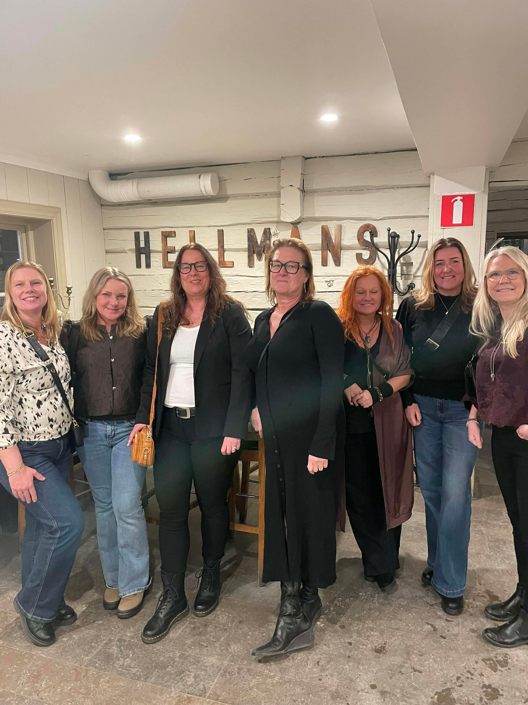
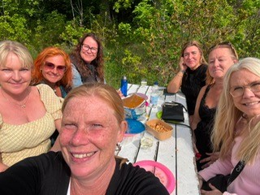
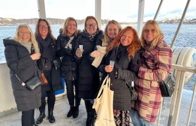
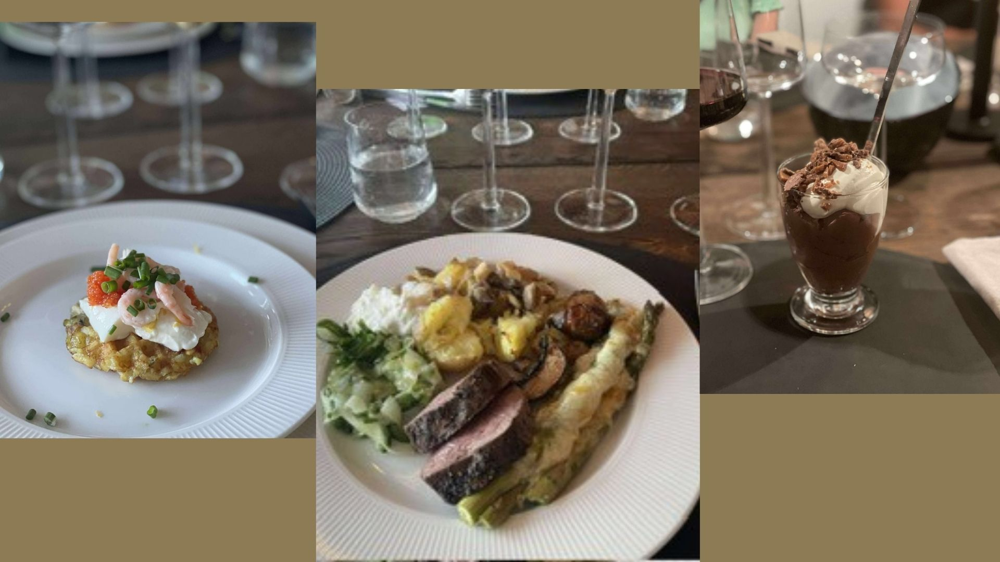
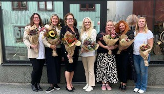
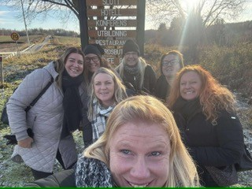

🌸 Välkommen till Bubbel & Babbel!
Här samlar vi våra träffar under året – bilder, minnen, berättelser och annat som vi vill kunna gå tillbaka till.
📅 Kommande
📍 Hitta hit
Här samlar vi våra träffar under året – bilder, minnen, berättelser och annat som vi vill kunna gå tillbaka till.

Start på Voyage med möte och fördrink, sen pizzabakning på Hellmanska(och massa vin) och party på brovakten

Anordnare Maria.N och Karin med Frisbee Golf i Oxelösund sen middag hos Karin.

Här skriver du om aktiviteten för träff 14.

Här skriver du om aktiviteten för träff 15.

Hos Maria i stockhol anordnare Maria.W & Karin.Båtresa & ABBA museum. övernattning hos Maria i hennes övernattningslägenhet.

Hemma hos Alex anordnare Alex och Pernilla. Laga mat tillsammans. Avslutade kvällen på smutsiga duken.

Anordnare Maria.N och Tina. Blomkurs med bubbel och plockmat hos Blomstande Brandell. Mat hos Maria på kvällen.

Buss till Östermalma för att gå på julmarknaden. Lunch på Östermalma och upphämtade av Perra och Peder för middag hemma hos Alex..

Hemma hos Pernilla anordnare Alex, Pernilla & Tina. Seans med Anu

Loppis i Bergshammarsbygdegård med middag (Italienskbuffé) & hipster på kvällen

Pangskär hos Tina anordnare Tina & Tici. Promenad och bad i tunna. Planering Mexicofesten.

Mexico fest i NK villan. En succé fest. Back on track spelade. Popular shotbricka gjord av Lasse och lottförsäljning.

Bubbelprovning, lära känna varandra och regler.

Maria & Maria anordnar lunch Ceasarsallad m bubbel och vandring runt Nävsjön.
Middag serveras hos Maria på Fridasväg.

Anordnare Tici & Karin hemma hos Tici.
Show på Rosvalla och efteråt drink på Voyage